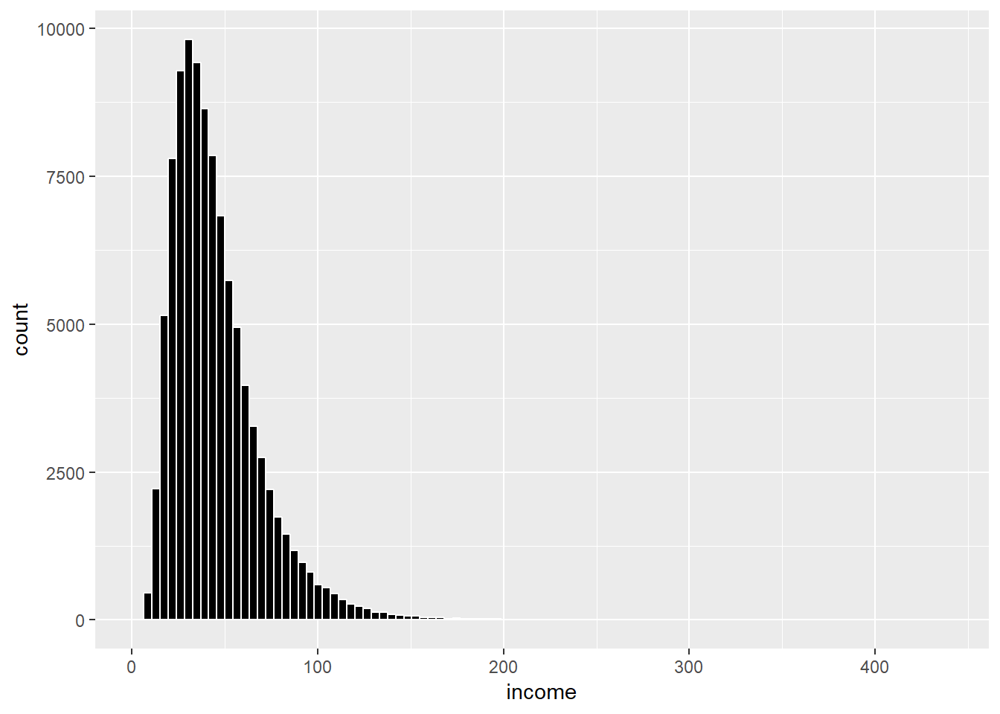

Economic Data
Version 0.8 - Oct 3, 2019
changes
version 0.8: Typo in chapter 12!
version 0.7: Changed the animation for the population pyramid to the right version. Thank you for notifying me of this!
Introduction
This online resource is for the unit Economic Data at the University of Bristol. After teaching the unit for two years based on technical manuals, lecture notes and extracts from several text books, I decided to combine all material in one “resource”, which is this “online book”. The goal is that this will make it simpler and easier for both students and teachers, as all material is collected at one place.
The book is divided into two parts. The first part contains nine chapters on economic concepts. In going through these concepts I also discuss visualization principles and describe how the charts and tables can be created using R or MS Excel. The second part contists of seven chapters with more details on the tools and principles behind the data visualization.
This book builds on a long list of books, articles and external references. These resources are referenced throughout, but it is worth mentioning a few of the most important resources:
- “The Economy” (The CORE Team 2017): mainly for descriptions on economic concepts.
- “Show me the numbers” (Few 2012): for detailed descriptions on chart and table design.
- “Fundamentals of Data Visualization” (Wilke 2019) and “Data visualization: a practical introduction” (Healy 2018): for detailed descriptions on how to create charts using R.
This project is work-in-progress and it will be updated continuously. At the current state it is likely to contain typos, inaccuracies and omisisons. I am grateful for all help in identifying these. Please notify me of any errors you find in the book. You can either send me an email: h.h.sievertsen@bristol.ac.uk or create an issue on the github repository github.com/hhsievertsen/economicdata. Thanks.
This online book is licensed under the Creative Commons Attribution-NonCommercial-ShareAlike 4.0 International License.
Part I: Econ Concepts and Definitions
Placeholder
0.1 About this chapter
0.1.1 Intended learning outcomes
0.1.2 Population data visualization examples
0.2 Definitions on people
0.2.1 Flow and stock variables
0.2.2 The population level
0.2.3 The population flows
0.3 Visualizing population data
0.3.1 Exploring data on population levels
0.3.2 Showing relative changes
0.3.3 Creating a table on population changes
0.3.4 Describing the change in levels by the underlying flow variables
0.3.5 Creating a pyramid chart using Excel
0.4 Summary
Chapter 1 Data about economic activity
Placeholder
1.1 About this chapter
1.1.1 Intended learning outcomes
1.1.2 A brief history of GDP
1.2 The Economy of Microcountry
1.3 What is GDP and how do we measure it?
1.3.1 The Expenditure Approach
1.3.1.1 The expendture approach and economic activity in Microcountry
1.3.2 The income approach
1.3.2.1 The income approach and economic activity in Microcountry
1.3.3 The production approach
1.3.3.1 The production approach and economic activity in Microcountry
1.3.4 What is included in the GDP measure?
1.3.5 GDP - Why 3 approaches?
1.4 Gross National Income (GNI)
1.5 What we use GDP for
1.5.1 Growth rates
1.5.1.1 Decompose growth
1.5.2 Business cycles
1.5.3 GDP per capita
1.5.4 Productivity
1.5.5 The balance of trade
1.5.6 Balance of payments
1.6 Summary
Chapter 2 Measuring Well-Being
Placeholder
2.1 About this chapter
2.1.1 Intended learning outcomes
2.2 What is well-being?
2.3 GDP and well-being
2.3.1 The Stiglitz Report
2.3.2 Criticism of GDP as a well-being measure
2.4 How to measure well-being & quality of life
2.4.1 Recommendations from the Stiglitz report
2.4.2 Operationalizing well-being measures
2.4.2.1 Subjective well-being measures
2.4.2.2 Objective well-being measures
2.5 Measuring well-being in practice
2.5.1 Quick guide: Combining several variables
2.5.2 The Human Development Index (UN)
2.5.3 World Happiness Report
2.5.4 OECD Better Life Index
2.5.5 ONS Measuring National Well-being
2.5.6 Quality of life indicators
2.6 Why is the GDP used anyway?
2.7 Summary
Chapter 3 Life and Death
Placeholder
3.1 What this chapter is about
3.2 Describing fertility trends
3.2.1 Data requirements
3.2.2 Relating the fertility measures to each other
3.2.3 Decomposing the development in life births
3.3 Life expectancy
3.4 Summary
Chapter 4 Prices
Placeholder
4.1 About this chapter
4.1.1 Intended learning outcomes
4.2 Price indexes - in theory
4.2.1 The objective
4.2.2 A simple index
4.2.3 The Laspeyre Index
4.2.4 The Paasche Price Index
4.2.5 The Fisher Price Index
4.2.6 The Lowe Price Index
4.2.7 Other indexes
4.2.8 Chain-linked vs. unchained indexes
4.2.9 Summary on price indexes
4.2.10 Weigths
4.3 Price indexes - in practice
4.3.1 Consumer Price Indexes
4.3.2 Producer Price Index, Import Price Index and Export Price Index
4.3.3 Other indexes
4.4 Comparing monetary values across time
4.4.1 Inflation
4.4.2 Real vs. nominal values
4.4.3 The real interest rate
4.4.4 The Phillips Curve
4.5 Comparing monetary values across regions
4.5.1 The Big Mac index
4.5.2 Purchasing Power Parity
4.6 Summary
Chapter 5 Money
Placeholder
5.1 About this chapter
5.1.1 Intended learning outcomes
5.2 Interest rates
5.2.1 The basics: What is the interest rate?
5.2.2 Three interest rates
5.2.3 Getting data on interest rates
5.2.4 Summary: Interest rates
5.3 Exchange rates
5.3.1 Definition of exchange rates
5.3.2 Ups and downs: appreciation and depreciation
5.3.3 Summary: Exchange rates
5.3.4 Getting data on exchange rates
5.4 Linking interest rates and exchange rates
5.5 Summary
Chapter 6 The labor market
Placeholder
6.1 About this chapter
6.1.1 Indend learning outcomes
6.2 From population data to the labor market
6.2.1 Grouping the population according to economic activity:
6.3 Unemployment
6.3.1 What is unemployment?
6.3.1.1 An internationally coherent definition of unemployment
6.3.2 Employment
6.3.2.1 An internationally coherent definition of employment
6.3.3 The unemployment rate
6.3.3.1 An internationally coherent definition of the labor force
6.3.3.2 An internationally coherent definition of the unemployment rate:
6.3.3.3 The unemployment rate. An illustration using data for United Kingdom
6.3.4 Out of the labor force
6.3.5 Labor supply: Extensive vs. intensive margin
6.3.5.1 What about the intensive margin?
6.3.5.2 Policy relevance of the intensive margin
6.3.5.3 Measuring labor supply on the intensive margin?
6.3.5.4 Measuring labor supply: An illustration using hours worked.
6.4 The demand side: Vacancies
6.4.1 Measuring labor demand
6.4.1.1 Advantages and disadvantages
6.4.1.2 The job vacancy rate
6.5 Supply meets demand
6.6 Summary
Chapter 7 Measuring inequality
7.1 About this chapter
One of the criticisms of GDP as a well-being measure is that “GDP ignores the distribution” (see chapter x). GDP is simply an average across the entire economy. It doesn’t tell us who experiences the “economic activity”, beyond the decomposition into sectors or workers and firms. If we look behind these total numbers and consider the distribution of the income, we would probably see something like the chart shown in Figure 7.1. The chart is a histogram of income for a simulated income. Most individuals earn an income well below 100 thousand pounds per year, but some earn way more than that. This chapter is about how we can describe such patterns and compare them across countries and across time.

Figure 7.1: The distribution of income. Data is simulated.
7.1.1 Intended learning outcomes
After reading this chapter you should be able to
- Explain the difference between macro and micro level data.
- Explain the data requirements for studying income or wealth inequality.
- Create histograms and compute income shares
- Create a Lorenz curve
- Calculate and interpret the Gini coefficient
7.2 Data requirements
7.2.1 Macro and micro level data
Macro level data
So far we’ve mostly been using macro level data. Macro level data is data about countries, regions or other entities comprising many individuals, households, firms and institutions. An observation in macro data represents the average, the sum or another statistic of these individuals, firms and institutions. We can typically download most macro data from a public source.
Micro level data
In micro level data each observation represents the value for an individual, a household, a firm or an institution. Micro data is often the basis for macro data. It is often based on surveys or administrative records. Micro data is rarely directly accessible from public sources. One reason for this is that micro data often contains a lot of detailed information that shouldn’t be shared freely with everyone. Getting access to micro data therefore often requires us to submit an application and sign a confidentiality agreement. Moreover, when working with micro level data we should be careful with how we share and store the data.
Because I cannot share of the micro level data I have publicly, the data in 7.1 is simulated. I created the data in R, using the following comands:1
library(tidyverse)
df<-tibble(income=exp(rnorm(100000,log(40),0.5)))
ggplot(data=df,aes(x=income)) +
geom_histogram( bins=100,fill="black", col="white")
7.2.2 Net and gross values
When assessing the distribution of income within the population it is important first to decide whether we are interested in the net or gross income distribution. We’ve already used the term “net” and “gross” on several occasions. When discussing net-migration or Gross Domestic Product. But what do these terms mean? In general we can think of the terms net and gross as follows:
- Gross: The value without deductions, contributions etc.
- Net: The value after deductions, contributions etc.
We use the terms net and gross in many situations. If you buy packaged food the label might display the gross and net weight. The gross weight will then be the total weight before deductions, the net weight will be the weight of the product after we deducted the weight of the packaging etc.
The most common use of the terms net and gross is probably in income, where gross refers to the income before taxes, and net to the income after taxes. Statistical offices and economists in general agree on excluding taxes from gross terms and including taxes in net terms, but there is less agreement on whether transfers such as housing benefits and unemployment benefits in net terms should be included.
When working with income data, the concept of disposable income is therefore also often used instead. The idea is that we want to consider the income that the household can spend, which will be the income after all taxes, transfers, and deductions.
7.2.3 Equivalenced income
In working with income data we are often interested in comparing households instead of individuals. However, households are not all of the same size, and we will therefore have to adjust monetary measures to the size of the households, we call income that is adjusted to household equivalenced income. We will here briefly discuss the three most common approaches to equivalise income.
The Oxford scale or OECD equivalence scale.
- The first person in the household: Weight 1
- Each additional adult household member: Weight 0.7 (person aged 14 and over)
- Each child household member: Weight 0.5
The OECD modified scale.
- The first person in the household: Weight 1
- Each additional adult household member: Weight 0.5 (person aged 14 and over)
- Each child household member: Weight 0.3
The Square root scale.
- Total weight: square root of the number of household members.
While the square root method is probably the most popular approach, the choice of approach is non-trivial as Table 7.1 shows. The table shows four different households that all have the same income, but the composition of households vary. The Oxford scale does for example but quite high weight on children compared to the modified OECD scale. The square root scale on the other hand puts the same weight on adults and children, but each additional member gets a lower weight.
| Adults | 1 | 2 | 1 | 2 |
|---|---|---|---|---|
| Children | 0 | 0 | 1 | 2 |
| Household income | 100 | 100 | 100 | 100 |
| Equivalised income | ||||
| Oxford scale | 100 | 58.824 | 66.667 | 37.037 |
| OECD modified | 100 | 66.667 | 76.923 | 47.619 |
| Square root | 100 | 70.711 | 70.711 | 50.000 |
When working with household income data you should adjust income measures and be aware of the differences between the approaches.
A histogram
While most data representation tools are concerned with the relationship between two or more variables, histograms focus on only one variable; they are used to show the distribution of a single variable}. Histograms look very much like bar charts, and one interpretation of a histogram is, that it is a special case of a bar chart, where the x-axis is always showing intervals of the variable. Another peculiarity of a histogram is that y-axis typically shows the density.
To create a histogram we conduct the following steps:
- Decide on the categories used on the x-axis.
- Count the number frequencies of each category selected in step 1.
- Convert the counts to relative frequencies (optional).
The first step seems very trivial. However, often the data is not discrete and the categories on the x-axis will be intervals. When values are continuous we will have to group a range of values in a bin. For example a bin containing all values between 1 and 2 (i.e. 1, 1.00001, 1.0004,1.431 etc.). The choice of bins is actually quite important. There is a trade-off between getting a more smooth picture of the distribution (i.e. with coarse bins) and getting a detailed but more noisy picture of the distribution (i.e. with fine bins).
Selecting the bin width?
So how do we select bin widths? Notice that we can either make a choice of the number of bins or make a choice of the bin widths. As these two are related we cannot select them independently. In practice, the choice of the number of bins (or bin width) is rather ad hoc. However, most statistical software has built in “rule-of-thumb” decision rules. Let us briefly discuss some of the basic rules. Let k be the number of bins, we can select k based on:
The square root rule
\[\begin{align} k=\sqrt(N) \end{align}\]
where N is the number of observations.
- Stata’s default \[\begin{align} k=\min\left\{\sqrt(N), \frac{10\ln(N)}{\ln(10)}\right\} \end{align}\]
such that k is the lowest value of the square root rule and ten times the natural logarithm of the number of observations divided by the natural logarithm of ten.
- Sturges’ rule \[\begin{align} k=log_2(N)+1 \end{align}\]
this formula is used as the default in R (Base). With 2000 observations Sturges’s rule suggest 12 bins.
Note how the three different formulas provided very different suggestions. The same data will lead to bar chart with 12 bins in R and 33 bins in Stata. It is therefore always a good idea to assess the histogram using various bin specifications, manually.
What are densities?
In the histograms we’ve plotted so far, the y-axis has always shown relative frequencies. However, often the y-axis of histogram shows something called densities. In practice there are three options for the y-axis:
- Counts: i.e. the frequency.
- Relative frequency (the frequency divided by the number of data points)
- Frequency density (the frequency relative to the bin width) or the Probability density.
The frequency density is the frequency divided by the bin width, and the probability density is the relative share divided with the bin width.
7.4 The Lorenz curve and the Gini coefficient
So far, we have looked at specific parts of the income distribution. What about the other parts of the income distribution and their income shares? And can we combine all these income shares in one measure? Yes, that is what the Lorenz curve does
One of the most common approaches to show income distributions is the Lorenz-curve, developed by the American economist, Max Lorenz. The curve plots the share of total income relative to the position in the income distribution. So on the x-axis we rank the population by their income and on the y-axis we show the cumulative income share. Here is cookbook for creating a Lorenz curve:
Sort all households (individuals) by their income, from lowest to highest and give them a relative income rank.
Compute the total income in the population.
For each individual in the household calculate their share of total income.
Calculate the cumulative income share by adding the individual shares. So for the household with the lowest income, the cumulative share is just their income share. For the second lowest income household, the cumulative income share is their share plus the share of the lowest income household.
Create a line chart of the cumulative income shares against the household (individual) income rank.
Now what do we expect? How does this chart look? Let’s consider a very simple example of an economy with 10 households as shown in Table 7.2. In scenario 1 all households have the same income. In scenario 2, one household has all income of the economy. In scenario 3 the income is gradually increasing.
| Household | Scenario 1 | Scenario 2 | Scenario 3 |
|---|---|---|---|
| 1 | 10 | 0 | 3 |
| 2 | 10 | 0 | 5 |
| 3 | 10 | 0 | 6 |
| 4 | 10 | 0 | 8 |
| 5 | 10 | 0 | 9 |
| 6 | 10 | 0 | 10 |
| 7 | 10 | 0 | 12 |
| 8 | 10 | 0 | 13 |
| 9 | 10 | 0 | 14 |
| 10 | 10 | 100 | 30 |
In situation 1, where every individual has the same share of the total income the Lorenz curve will be a straight line, the 45 degree line, as shown by the black line in Figure 7.4. While this situation is never seen in practice, this situation is important because it serves as a reference point for a completely equal income distribution.

Figure 7.4: Lorenz curves for 3 different income distributions.
Situation 2 is the other extreme, where one household has 100 percent of the income, as shown by the in Figure . Finally, the green line in 7.4 shows situation 3, where every household has some income, but the income share is slowly increasing. Note from Table 7.2 that in Situation 3, the sixth household has the same income as in the perfectly equal situation. All households below (1-5) have a lower share than in the equal situation and all households above have a higher share.
Based on the Lorenz curve we can make statements on the income distribution, such as “the bottom 30 percent has 14 percent of the total income” or “the bottom 50 percent has 31 percent of the income” (Situation 3).
While the Lorenz curve provides a graphical representation of the income distribution, we are often interested in quantifying the income distribution in one number. This can be done by means of the Gini coefficient. We use the Lorenz-curve and situation 1 above as a point of departure to calculate the Gini coefficient.
7.4.1 The Gini coefficient
Note from the discussion above, that the 45 degree line represents a perfectly equal distribution. To quantify the degree of inequality we are interested in quantifying how far we are from that situation. One way to quantify this is by means of the area between the actual income distribution and the 45 degree line, corresponding to area A in Figure 7.5. The smaller this area is, the closer we are to the perfect equal distribution. We can then scale this area to the total area below the 45 degree line, which is area A and area B in Figure 7.5, and that is the Gini coefficient. The Gini coefficient will always be between 0 (perfectly equal) and 1 (perfectly unequal).
Figure 7.5: The Lorenz curve and the Gini coefficient. The Gini coefficient is \(A/(A+B)\).
Returning to the example above, how can we calculate the Gini coefficient? First note, that the curves in Figure 7.5 are not smooth as in Figure 7.5. In practice, is discrete and not continuous. We can therefore obtain approximate the areas by considering the difference between the 45 degree line and the actual income share for each household, as shown by the grey bars in Figure 7.6. We can then relate the sum of the area of these bars to the sum of the area of these bars and the orange bars in Figure 7.6 (corresponding to area B).


Figure 7.6: Approximating the Gini coefficient using the Lorenz curve Left: approximation of area A. Right: approximation of are B.
Table 7.3 shows how we can approximate the areas A and B in the simple examples above to calculate the Gini coefficient. We simply use the approach illustrated in Figure 7.7. Each bar has a width of 0.1 which we multiply by the height of the bar.
| Rel. rank | Scenario 2 | Scenario 3 | Scenario 2 | Scenario 3 |
|---|---|---|---|---|
| 0.1 | 0.010 | 0.007 | 0.000 | 0.003 |
| 0.2 | 0.020 | 0.012 | 0.000 | 0.008 |
| 0.3 | 0.030 | 0.016 | 0.000 | 0.014 |
| 0.4 | 0.040 | 0.018 | 0.000 | 0.022 |
| 0.5 | 0.050 | 0.019 | 0.000 | 0.031 |
| 0.6 | 0.060 | 0.019 | 0.000 | 0.041 |
| 0.7 | 0.070 | 0.017 | 0.000 | 0.053 |
| 0.8 | 0.080 | 0.014 | 0.000 | 0.066 |
| 0.9 | 0.090 | 0.010 | 0.000 | 0.080 |
| 1 | 0.00 | 0.00 | 1.00 | 1.00 |
| Total area | 0.450 | 0.132 | 0.100 | 0.418 |
| Situation 2 | Situation 3 | |||
| Gini coefficient | \(\frac{0.450}{0.450+0.100}=0.818\) | \(\frac{0.132}{0.132+0.418}=0.240\) |
In the case of the very unequal distribution of resources, we get a Gini coefficient of 0.82 (situation 2) and in the (more realistic) situation 3, we get a Gini coefficient of 0.24. So how do these Gini coefficients correspond to real world Gini coefficients? Figure 7.7 shows a bar chart of Gini coefficients for European countries in 2016. According to Eurostat, the UK had a Gini coefficient of 0.315 in 2016. Serbia had a Gini coefficient of 0.386 and Slovakia a coefficient of 0.243. The simple “realistic” example (situation 3) is therefore not far from what we observe in the real world.

Figure 7.7: Gini coefficients in 2016 for European countries. Source: Eurostat.
Can we generalize our “Gini” approximation above to obtain a formula? First, note that both the x and y axis go from 0 to 1, the area of A+B will therefore always be 0.5 (\(1\times 1\times 0.5=0.5\)), we can therefore write:
\[\begin{align} Gini&=A/(A+B)\nonumber\\ &=A/0.5\nonumber\\ &=1-2B \end{align}\]
where we simply used that since \(A+B=0.5\) we have that \(A=0.5-B\). Now we just need to find the area \(B\). First, let us define household \(i's\) income (or wealth) be \(y_i\), where we have sorted all households according to their income (or wealth) rank. The first household (the one with the lowest income or wealth) will have the following contribution to the area B:
\[\begin{align} b_1=\frac{y_1}{\sum_i^ny_i} \end{align}\]
the second household will contribute with the following value:
\[\begin{align} b_2=\frac{y_1+y_2}{\sum_i^ny_i} \end{align}\]
finally, we sum over all these households to get:
\[\begin{align} B=&\frac{1}{n}\frac{y_1}{\sum_i^ny_i}+\frac{1}{n}\frac{y_1+y_2}{\sum_i^ny_i}+\dots+\frac{1}{n}\frac{y_1+y_2+\dots+y_n}{\sum_i^ny_i}\nonumber\\ B=&\frac{1}{n}\frac{y_1+y_1+y_2+\dots y_1+y_2+\dots+y_n}{\sum_i^ny_i}\nonumber\\ B=&\frac{1}{n}\frac{ny_1+(n-1)y_2+\dots+y_n}{\sum_i^ny_i}\nonumber\\ B=&\frac{1}{n}\frac{\sum_i^n(n-i+1)y_i}{\sum_i^ny_i}\nonumber\\ \end{align}\]
which we can insert in the expression for \(Gini\) above to get an expression for the approximate Gini coefficient:
\[\begin{align} Gini&=1-\frac{2}{n}\frac{\sum_i^n(n-i+1)y_i}{\sum_i^ny_i}\nonumber \end{align}\]
It is important to remember that the formula is an approximation based on the bar chart approach. It will work well as long as the number of bars is sufficiently large. There are many formulas for the Gini coefficient. The above is simple and straightforward, but there are other formulas that give more precise estimates. The formula tend to overestimate area B, because we are approximating the area using the height at right end of the bars (a small improvement is simply to use the average of the height of the bar and the height of the lagged bar).
What is good about the Gini coefficient? First of all, the Gini coefficient is just one number, and it is thus easy to compare across countries and time. Secondly, it satisfies a number of key principles: (A) it is independent of a countries size and the currency used, (B) if a rich a household transfers money to a poor household the Gini will be reduced and (C) it is anonymous (it does not say anything about who the poorest and richest households are).
Is the Gini coefficient a perfect measure of inequality? No! Institutional settings differ considerably. How health care in a country is financed will affect the inequality. Is all health care is privately funded, it will take out a large share of low income households, and a relatively low share of high income households. On the other hand, if health care is financed by a progressive income tax this will not be the case.
Another issue with the Gini coefficient is that it depends on the quality of the data. If it is only calculated based on deciles (as above) it will be considerably less precise than if it is calculated based on thousands of observations.
7.5 Other measures of inequality
The Gini coefficient is by far the most popular measure of inequality. The data is available across time and areas for many different country. However, as mentioned above, it is not perfect and there are alternative measures. Let’s briefly discuss a few
Ratios
One straightforward measure of inequality is a comparison of ratios in the income distribution, for example:
- What is the ratio of income of the top 20 percent to the bottom 20 percent?
- What is the ratio of income of the top 10 percent to the bottom 10 percent?
7.6 Summary
In this chapter we’ve covered the following topics:
- Goal: describe the distribution of resources (income or wealth).
- Data requirements: micro data, equivalenced household income, net vs. gross.
- Income (Wealth) shares: the share of total income (wealth) that goes to one specific group of the population.
- Lorenz curve: Cumulative income shares against income rank
- Gini coefficient: Actual Lorenz curve compared to a Lorenz curve with perfect equality.
- Income (wealth) ratios.
- The wage share
- Histograms
Chapter 8 Poverty
Placeholder
8.1 About this chapter
8.1.1 Indended learning outcomes
8.2 Measuring global development
8.2.1 Measuring poverty
8.2.1.1 Income or consumption?
8.2.1.2 Relative or absolute measures?
8.3 Poverty measures
8.3.0.1 Challenges with poverty line
8.4 Summary
Part II: Data sources and tools
Placeholder
8.5 About this chapter
8.5.1 Intended learning outcomes
8.6 Data source types
8.6.1 Overview
8.6.2 Simulated data
8.6.3 Sample surveys
8.6.4 Census survey
8.6.5 Administrative data
8.6.6 Comparison of data sources
8.7 Economic data sources
8.7.1 Data from Statistical Offices
8.7.2 Downloading data from Statistical Offices
8.7.3 Central banks
8.7.3.1 Bank of England
8.7.3.2 The US FED
8.7.4 International organizations
8.7.4.1 The IMF
8.7.4.2 The OECD
8.7.4.3 Eurostat
8.7.4.4 The UN
8.7.4.5 The World Bank
8.7.5 Topic specific databases
8.7.5.1 Our World in Data
8.7.5.2 Gapminder
8.7.5.3 The World Inequality Database
8.7.6 Publicly available data: An overview
8.7.6.1 Downloading datasets
8.7.6.2 Selecting the appropriate source
8.7.7 Using APIs
8.8 Summary
Chapter 9 How data is stored
Placeholder
9.1 About this chapter
9.1.1 Intended learning outcomes
9.2 How computers work
9.2.1 1 or 0
9.2.2 From 0 and 1 to interpretable content.
9.2.3 From signals to bits and bytes.
9.2.4 A never ending confusion 1000 or 1024?
9.2.5 How fast is your Internet connection?
9.3 Encoding
9.3.1 How encoding and decoding works
9.3.2 Where does the big table come from?
9.3.3 There are many codebooks. What a mess!
9.3.4 Encoding and decoding: What you should know and do?
9.3.5 The unicode encoding scheme
9.3.5.1 UTF-8, UTF-16, UTF-32
9.3.6 Encoding and decoding goes wrong, what can you do?
9.3.7 Encoding: What you shouldn’t do!
9.4 Estimating file size and memory use
9.4.1 Variable types
9.4.2 File size
9.4.3 What happens if we use the wrong variable format?
9.4.4 Estimates are estimates
9.5 The tidy data principles
9.6 Summary
Chapter 10 Decribing changes
Placeholder
10.1 About this chapter
10.1.1 Intended learning outcomes
10.2 The objective: Guide the reader
Support charts and tables
10.2.1 How to guide the reader
Example 1
Example 2:
Explaining graphs: Don’t take the reader on a roller coaster ride!
Explaining tables
10.3 Describing differences
10.3.1 Differences in absolute terms
10.3.2 Relative differences
10.3.3 Percentage point vs percent
10.4 Calculating compound growth rates
10.4.1 Using indexes
10.5 Decomposing changes
10.6 Removing noise
10.6.1 Moving averages
10.6.2 Seasonally adjustment
Decomposing a series
Step 1: Identify the trend level
Step 2: Subtract the trend level from the raw series to obtain a series containing the seasonal and irregular components.
Step 3: Apply the moving for each reoccurring period to obtain estimates of the seasonal component of that period.
Step 4: Subtract the seasonal components from the raw data to obtain a first estimate of seasonally adjusted series.
Step 5: Repeat!
The resulting seasonally adjusted series
10.7 Data processing
10.8 Summary
Chapter 11 Basics of good data visualization
Placeholder
11.1 About this chapter
11.2 How we show data matters
11.2.1 Illustration: The Anscombe quartet
11.3 Tables vs charts
11.3.1 The goal of the visualization
11.3.2 The quantity of data
11.4 Table design
11.4.1 Table structure
11.4.2 Table layout and design
11.5 Chart design
11.5.1 Basic chart structure
11.5.2 How charts work
11.5.3 Common chart types
11.5.3.1 The line chart
11.5.3.2 The bar chart
11.5.3.3 Maps
11.5.4 Charts to avoid
11.5.4.1 Pie charts
11.5.4.2 Charts with 3D effects
11.6 Lies, junk and non-data ink.
11.6.1 Tufte’s concepts for good data visualizations.
11.6.1.1 The Lie Factor
11.6.1.2 Data-ink ratio
11.6.1.3 Chartjunk
11.6.1.4 Alberto Cairo’s principles of good data visualizations
11.7 The self-explanatory data visualization
11.8 A cook-book for good data visualizations
11.9 Summary
Chapter 12 Excel basics
Placeholder
12.1 About this chapter
12.2 Advantages and disadvantages of spreadsheet software
Advantage 1: We directly observe the data
(Dis)advantage (1)2: Variables are updated real-time
Advantage 3: It is widely used
Advantage 4: We can format the table
Disadvantages
12.3 The structure of spreadsheet software
12.3.1 The organization of Excel
12.3.2 The organization of Google Sheets and OpenOffice Calc
12.4 Basic operations in Excel
12.4.1 A cell can contain characters, numbers and formulas
12.4.2 Using spreadsheet software as a calculator
12.4.3 Cell referencing
12.4.4 Excel loves tidy data
12.4.5 How formula copying works
12.4.6 Extending non-formula content
12.4.7 Keep your data tidy
12.4.8 Locking references
12.4.9 Referencing across worksheets and workbooks
12.4.10 Copy and paste special
12.4.11 (Identifying) errors and referencing issues
12.5 Creating charts in Excel
12.5.1 Insert a chart
12.5.2 Select the data for the chart
The required structure of the data
12.5.3 Manually adjust charts
12.5.4 Adjusting charts
Combing chart types
Formatting elements in charts
12.6 Formatting cells to create tables
Spreadsheets for raw data and tables to communicate data}
Cell content type
Formatting cells
12.7 Inserting charts and tables in text documents
Inserting charts and tables in Word type document (or similar document types)
12.8 Summary
Chapter 13 Advanced Excel
Placeholder
13.1 About htis chapter
13.2 Control structures in Excel
13.2.1 Boolean logic
13.2.2 Using control structures in Excel
How to specify conditions
And, Or, Not
Using if conditions on a range
Using built-in functions with if conditions
13.3 Pivot tables: Excel loves tidy data
What are Pivot tables?
The data structure required for Pivot tables
How do we create a Pivot table?
Extracting data with Pivot tables
Calculating summary statistics with Pivot tables
13.4 Developer and VBA programming
Activating the developer tab
Recording macros
VBA programming
13.5 A small basket of tricks
13.5.1 Selecting cells in Excel
Using shift to select several adjacent cells
Using ctrl/cmd to select several non-adjacent cells
Using the keyboard to select cells
Using shift and ctrl/cmd to select complete entire range of (non-interrupted) cells
13.5.2 Using names
Naming cells
13.5.3 Sorting data and remove duplicates
Sorting observations
Removing duplications
13.5.4 Keeping the overview
Freeze panes
13.6 Summary
Chapter 14 Getting started with R
Placeholder
14.1 About this chapter
14.2 Getting R to work
Installing R and RStudio
R Studio cloud
A video guide
14.3 Organization of R and RStudio
14.3.1 The Organization of R
14.3.2 The Organization of RStudio
14.4 R as a calculator
Using the console
The console remembers
14.5 Creating a script
A more permanent memory
Executing commands from the script
14.6 Summary
References
Few, Stephen. 2012. “Show Me the Numbers.” Analytics Pres.
Healy, Kieran. 2018. Data Visualization: A Practical Introduction. Princeton University Press.
The CORE Team. 2017. The Economy-Economics for a Changing World. 1st ed. Oxford University Press, UK.
Wilke, Claus O. 2019. Fundamentals of Data Visualization: A Primer on Making Informative and Compelling Figures. O’Reilly Media.
I also made some minor adjustments to improve the data to ink ratio and make the chart self-explanatory. You should try that yourself.↩︎
Comments in the script